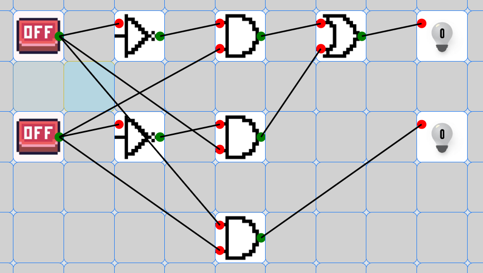
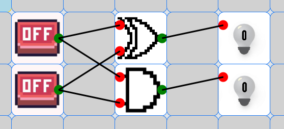
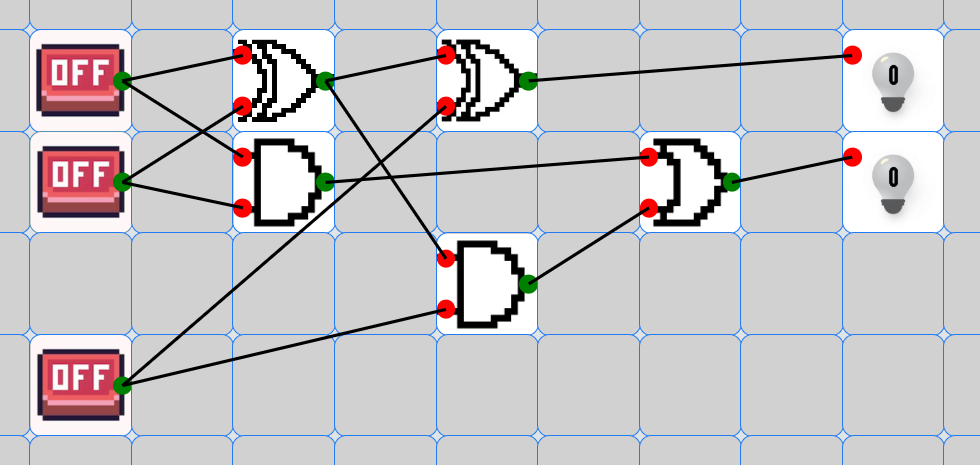
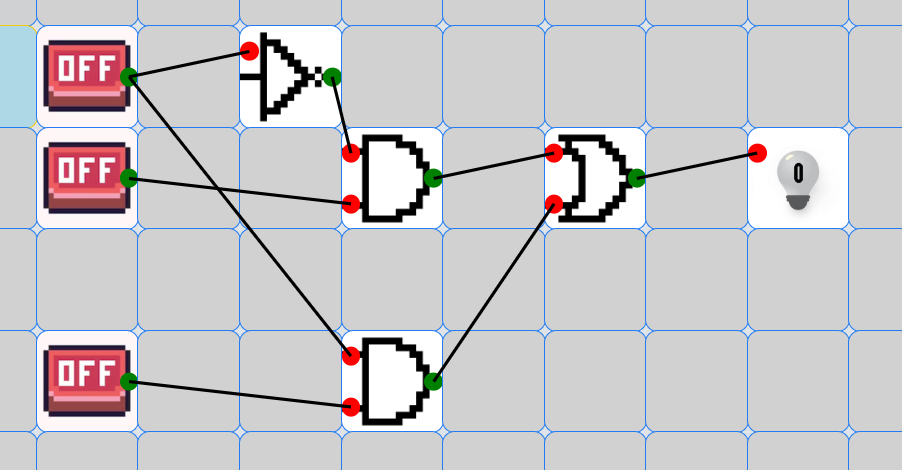

A Half Adder is a digital circuit that performs addition of two binary digits (A and B). It produces two outputs: Sum (S) and Carry (C).


A Full Adder adds three binary inputs: two significant bits and a carry-in from a previous addition.

Logic gates are the basic building blocks of any digital system. It is an electronic circuit having one or more than one input and only one output.

A Multiplexer (MUX) selects one of several input signals and forwards it to a single output line based on control signals.